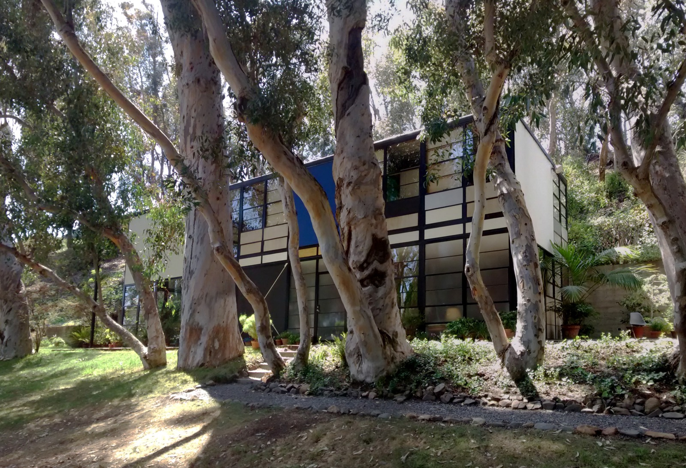

外から、形を見てみよう。
木々の間から見えるイームズ邸。黒い枠が壁や窓を四角く区切り、青や白の面が見えます。2014年の外観写真で、家の内部は見えません。
作品・制作の例3件を紹介しています。実作品画像1点、参照・関連画像0点。画像の収集は継続中です。
20世紀半ばの建築・生活用品をまとめる広い呼称
Mid-century Modern
20世紀のまん中ごろ、家や家具の形が変わりました。
木の板を曲げたり、プラスチックを型でつくったりして、新しい暮らし方を試したのです。
ミッドセンチュリー・モダンは、そうした時代のデザインを広く見る名前です。
実作品を見る

画像を表示できませんでした。下の出典ページで確認できます。
チャールズ＆レイ・イームズ（設計） / 1949（入居は12月24日）
木々の間から見えるイームズ邸。黒い枠が壁や窓を四角く区切り、青や白の面が見えます。2014年の外観写真で、家の内部は見えません。
イームズ邸／Case Study House No. 8 / Photo: Gunnar Klack, CC BY-SA 4.0.
出典で作品・資料を見る ↗CC BY-SA 4.0
原建築と写真の権利は別です。この外観写真の掲載を、図面・内部・家具などの自由利用の許可とは扱いません。
写真：CC BY-SA 4.0。出典・撮影者と画像の変更内容を表示して利用します。
縦横の比率を保って縮小しJPEGで保存。切り抜き・色の変更・描き足しはしていません。
建築外観の利用について、日本・米国などの個別の条件を確認しています。全法域で原建築がパブリックドメインという意味ではありません。
画像の利用条件 ↗住宅・仕事場
工場で用意できる部材を使い、住まいと仕事場をつくりました。四角く分かれた壁や窓と、周囲の木々の組み合わせから、工業製品と暮らしの関係を考えられます。
作品・資料の出典を見る ↗作品名（出典表記）：Eames House（イームズ邸／Case Study House No. 8）
Charles Eames、Ray Eames（チャールズ＆レイ・イームズ） / 1949（入居は12月24日） / 住宅・仕事場
家具
曲げた合板の殻と、柔らかなクッションを組み合わせました。足を載せる台と一緒に、体を休める姿勢を考えた家具です。
作品・資料の出典を見る ↗作品名（出典表記）：Lounge Chair and Ottoman（ラウンジチェア＆オットマン）
Charles Eames、Ray Eames（チャールズ＆レイ・イームズ）。製造Herman Miller（ハーマンミラー） / 1956 / 家具
家具
座面の下を一本の支えにまとめた椅子です。ガラス繊維を使った樹脂の座面と金属の脚を組み合わせ、ひと続きに見える形をつくります。
作品・資料の出典を見る ↗作品名（出典表記）：Pedestal Chair（ペデスタル・チェア）
Eero Saarinen（エーロ・サーリネン）。製造Knoll Associates（ノール・アソシエイツ） / 1960年頃（クリーヴランド美術館所蔵個体） / 家具
第二次世界大戦後、米国では住まいや生活用品への需要が大きくなりました。
カリフォルニアでは、屋外とつながる暮らしや、新しい材料を使う家具が注目されます。
ただし、すべてが安い大量生産品だったわけではありません。
イームズのラウンジチェアのように、ゆったり休むための高級な家具もあります。
木や革の色と、塗装された面の色を比べます。鮮やかな色があることだけで、この時代の作品とは決まりません。
この呼び名に共通する書体はありません。家具・建築・広告は、それぞれ別の資料で確かめます。
曲げた木の板、体に沿う殻のような座面、一本の支えにまとまる脚。形がどうつくられ、どこに力がかかるかを見ましょう。
イームズ邸では、四角く区切った外壁と、周りに残された木を一緒に見ます。家の中だけでなく、庭との関係も設計の一部です。
北欧モダンと人や技術の交流があります。また、バウハウスの時代より後に展開した作品が中心ですが、単純にバウハウスの形をまねた流行ではありません。地域と用途ごとに違う答えが生まれました。
昔の形がいまも人気でも、現在つくられた復刻品（ふっこくひん。昔の設計をもとにつくり直した品）と、当時つくられた品は別です。設計年と製造年を分けて読んでみましょう。
米国の住宅・家具3例に絞った入口で、同時代の世界のデザイン全体を示す選定ではありません。
作品・制作の例3件を紹介しています。実作品画像1点、参照・関連画像0点。画像の収集は継続中です。